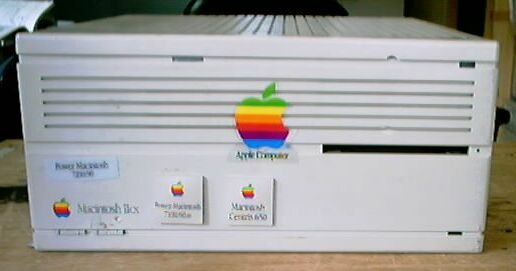
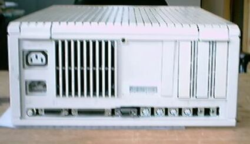

このIICXについて

このIICXは、MACのジャンクがまだ今のように安くはなかった頃、たくさんの AT互換機の山の中から見付け、５０００円で獲得したものです。フロントパネル
に大きな傷があり、そこにはAppleのロゴを張って隠してあります。
友達に貸し出したりしている内に、動かなくなってしまったので、 改造のチャンスがやってきました。最初は7100/66AVを入れました。それも壊れたので、
次は、Centris650になりました。もとのIICXの他のリンゴマークは、7100/66AVと Centris650のものです。バックパネルは、下の写真のように今まで使ったどのボード
でも入るよう、ほとんど削り取ってあります。

 IICXで使っていたＭＣ６８０３０１６Ｂ
IICXで使っていたＭＣ６８０３０１６Ｂ
68Kマッキントッシュのページに戻る